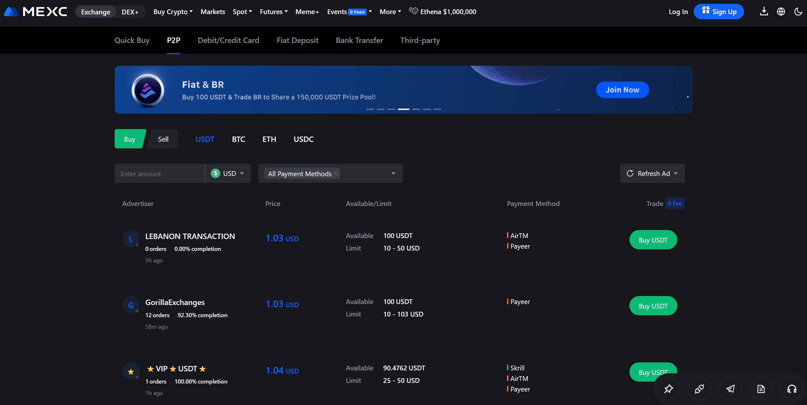
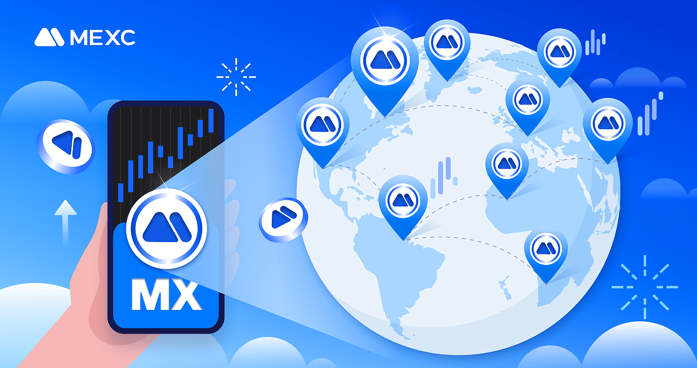

HTX Blog
Main Takeaways
- An escrow is a financial and legal agreement designed to protect Buyers and Sellers in a transaction. For a fee, an independent third party holds payment until everyone fulfills their responsibilities in the transaction.
- With MEXC intant transfer both buyers and sellers will receive their assets at the same time as soon as the trade has been completed assets will be transferred from the mexc escrow system to both parties.
Learn how the escrow service works on MEXC Instant Transfer and how it safeguards seller and buyer funds.

An escrow service is an arrangement in which a trusted third party handles the exchange of goods or assets between the transacting parties, ensuring safety and fair trading. MEXC Instant Transfer is a peer-to-peer trading market where you can safely trade crypto in exchange for your local currency. MEXC Instant Transfer service safeguards every transaction, giving traders peace of mind.
Once the buyer places an order, the seller's cryptocurrency will automatically be transferred from the seller's wallet to the temporary deposit with MEXC Instant Transfer. The cryptocurrencies will be held in the deposit guarantee until the transaction is successfully completed by both parties.
How Does the MEXC Instant Transfer Service Work?
Step 1: Place your order
Place an order to buy or sell cryptocurrency. The crypto will be held by MEXC Instant Transfer temporarily until the operation is successfully completed.
Step 2: Start a Conversation
Start a conversation with the seller/buyer. When you are trading with a counterpart that you do not know, we recommend that you use the chat to communicate with him/her and as well the seller needs to provide his/her Email address which is attached to his/her HTX Account. The seller should always be notified about MEXC Instant Transfer rules and regulations.
Step 3: Rules, Payment and CRYPTO RELEASE.
Immediately payment has been made by the buyer a receipt will be generated for the seller to confirm and then proceed to scanning the receipt with a QR CODE scanner to confirm authenticity of the receipt, After scanning the receipt for authenticity to complete this trade in order to receive payment in your designated payment method , Process to marking order as completed so HTX INTERNAL PAYMENT services will release the assets to both the BUYER AND SELLER at the same time
Step 4: The transaction was successful or the counterparty was not responding
In most cases, when everything goes smoothly, the buyer pays and the seller releases the crypto, but what happens if the counterpart was not fair? In other words, the buyer did not transfer the money or the seller did not release the crypto after the buyer made the payment.
In these cases you need to contact the HTX INTERNAL PAYMENT support center by clicking here
How Does the MEXC Instant Transfer Escrow Service Help Crypto Sellers?
If the cryptocurrency buyer did not make the payment, MEXC Instant Transfer escrow service will return the cryptocurrency to the seller and the Buyer's money will be returned after 30 working days. This is why we recommend the buyer to always inform the seller about the MEXC Instant Transfer rules and regulations
How Does the MEXC Instant Transfer Service Help Buyers?
If the buyer made the payment but the seller did not release the cryptocurrency, the buyer can contact support to notify HTX's customer service that the counterparty did not release the crypto. If you are the buyer, please provide as much evidence as you can, a receipt of payment, or screenshots of the conversation you had with the seller, and once our customer service confirms the payment is made, we can release the crypto to your account.

Why Is the Escrow Service Important?
The escrow service protects HTX's users from scammers. If a user tries to convince you to make a deal outside the HTX P2P platform, ignore the suggestion and open an appeal. If you make a deal outside the platform we cannot protect you.
Imagine that you want to buy cryptocurrency and you find an offer at a competitive price but the seller seems new to the platform, with zero completed orders. How can you be sure that the seller will transfer the cryptocurrency to your wallet?
The escrow service aims to solve this type of situation, by holding the cryptocurrency in a deposit. When there is no agreement and the counterpart opens an appeal, HTX's customer service will analyze both the buyer's and the seller's stories. If the buyer wins the appeal, the cryptocurrency will be released to his wallet. However, if he loses the appeal, the cryptocurrency will go to the seller's wallet.
While the cryptocurrency is in the deposit, users can trade safely without the risk of losing money. Whatever amount of money you trade, all amounts are important to HTX P2P.
Frequently Asked Questions About the MEXC Instant Transfer Service
What happens if, after making the payment, the seller does not answer and does not release the cryptocurrency?
The buyer can file an appeal if the seller is not responding to chat messages or not releasing the cryptocurrency. Our customer support team will evaluate the situation, contact both the parties and release the crypto to the fair party.
When an appeal is opened, how long will the funds be frozen?
Our customer service works 24/7. The funds will be unblocked as soon as the dispute between the parties is resolved and this depends on the complexity of each case and the verification of the evidence provided by both parties. The waiting time can range from a couple of hours to days.
What happens if the buyer marks the transaction as paid but the seller has not received the funds?
If the buyer marks the order as paid without actually making the payment, the seller can appeal and our customer support team will cancel the transaction after verifying with both the parties. Upon cancellation, the seller will receive the cryptocurrency back in the wallet.
